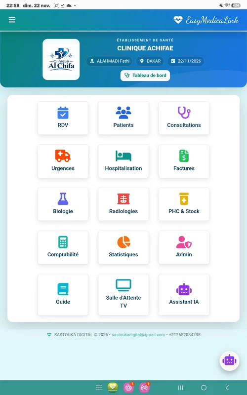
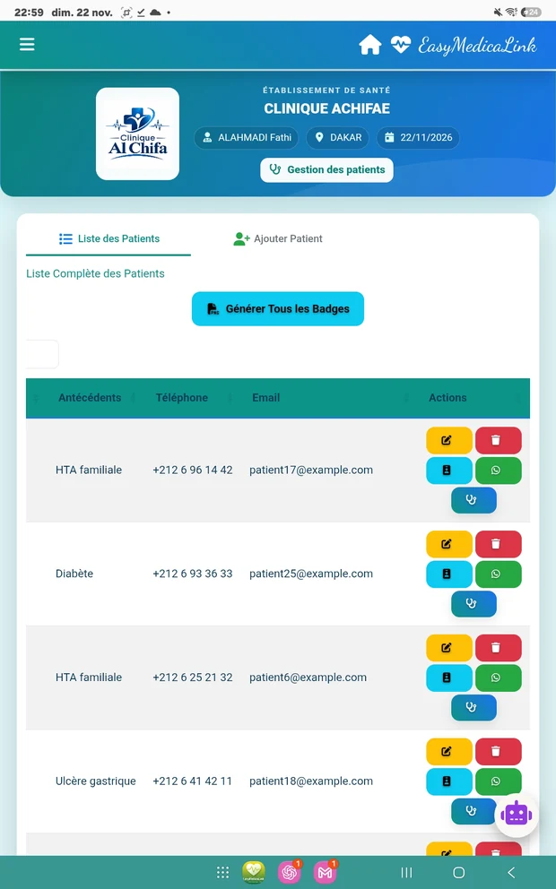
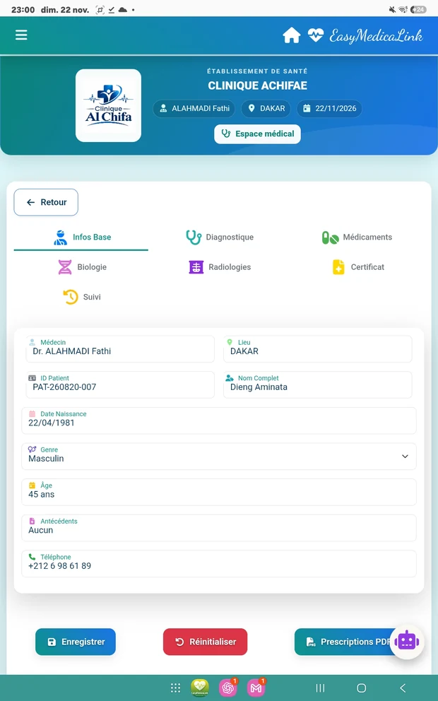
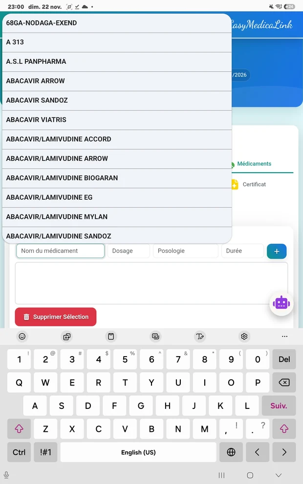
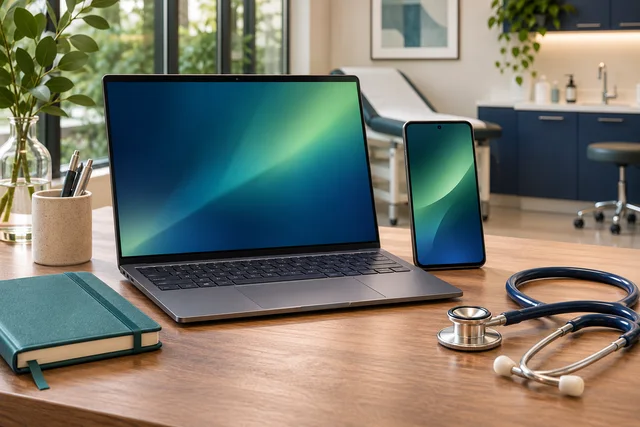

Rendez-vous
Planifiez la journée
- Retrouvez les créneaux et rendez-vous du cabinet.
- Vérifiez le planning avant l’arrivée du patient.
Logiciel de gestion médicale
De l’agenda à la facture, retrouvez les dossiers patients, les consultations et les documents au même endroit.
Windows 64 / 32 bits · Android · Réseau local selon configuration

Commencer la journée
L’agenda, les dossiers et les outils quotidiens sont accessibles depuis la page d’accueil.
Explorer le parcoursTrois films promotionnels, à regarder à votre rythme. Les séquences ne constituent pas des témoignages clients.
Découvrez le logiciel et sa mobilité.
Une journée au cabinet
Suivez le parcours dans les vrais écrans d’EasyMedicaLink, avec des données fictives. Choisissez une étape pour voir comment elle se déroule.
Rendez-vous

Dossier patient

Consultation

Ordonnance
Facturation
Au fil des consultations
Ouvrez le dossier, consignez les observations et préparez les documents depuis les modules de consultation.
Voir le module ConsultationExplorez 14 apparences authentiques du tableau de bord. Sélectionnez une palette : la capture réelle change immédiatement, sans filtre ni simulation de couleur.
Faites défiler horizontalement pour choisir un thème.
La palette est directement visible dans l’interface originale.
Les noms des palettes décrivent les couleurs visibles. Cet aperçu ne modifie pas votre application installée.
Retrouvez les 15 entrées du véritable écran d’accueil d’EasyMedicaLink. Cliquez sur une icône pour découvrir les captures originales de son module.
Organisez les rendez-vous et consultez le planning.
Retrouvez la liste des patients et le formulaire de dossier.
Explorez les onglets de consultation, les sélections de médicaments, examens et certificats.
Découvrez la saisie et la validation du dossier dans le service des urgences.
Découvrez le formulaire de suivi et d’enregistrement d’une hospitalisation.
Explorez la préparation et la gestion des factures.
Découvrez la saisie des examens et résultats biologiques.
Visualisez la gestion des examens radiologiques.
Découvrez l’espace pharmacie et les indicateurs de stock.
Consultez les recettes, dépenses et graphiques financiers de démonstration.
Explorez les indicateurs, graphiques et répartitions.
Découvrez les comptes, paramètres, sauvegardes et journal d’audit.
Retrouvez le guide intégré et l’aperçu des modules.
Découvrez l’écran destiné à la salle d’attente.
Explorez Synapse, l’assistant intégré sous contrôle du professionnel.
Une mise en scène de l’expérience médicale sur tablette.
Une assistance intégrée à votre environnement médical, selon la configuration. Le professionnel reste responsable de la décision clinique.
Dossiers, consultations, documents et facturation.
Découvrir →Hospitalisation, examens et organisation des accès.
Découvrir →Coordination des modules et suivi de l’activité.
Découvrir →Au sein de l’équipe
Le cabinet peut organiser les comptes et les accès selon sa configuration.
Voir la gestion des comptesOrdonnances, certificats et facturation : découvrez les usages et personnalisez vos en-têtes.
Le logiciel propose des comptes, des rôles et des outils de sauvegarde. Les modalités dépendent de votre installation. Aucune certification non vérifiée n’est revendiquée.
Une présentation promotionnelle pour les établissements.

Prêt à l’essayer ?
Retrouvez les versions Windows 64 bits, Windows 32 bits et Android.
Aller aux téléchargementsChoisissez la version qui correspond à votre appareil.
Pour un ordinateur Windows compatible 64 bits.
TéléchargerPour les systèmes Windows compatibles 32 bits.
TéléchargerInstallation selon les autorisations Android.
TéléchargerUn essai de 7 jours est proposé. Consultez les conditions de licence pour connaître les modalités.
EasyMedicaLink est proposé pour Windows (64 et 32 bits) et Android (APK).
Non. Il s’agit d’une assistance, pas d’un système autonome de diagnostic ou de prescription.
Contactez SASTOUKA DIGITAL pour confirmer l’offre applicable à votre configuration.
Où l’utiliser ?
EasyMedicaLink est proposé notamment aux professionnels exerçant en français. Ces exemples ne constituent ni une liste de clients ni une homologation locale.
Maroc, Algérie, Tunisie.
Sénégal, Côte d’Ivoire, Bénin, Togo, Burkina Faso, Mali, Guinée, Niger, Cameroun, Gabon, République du Congo et République démocratique du Congo.
France, Belgique, Suisse, Luxembourg, Canada (notamment le Québec) et Haïti.
Vérifiez la compatibilité Windows ou Android et les exigences de votre établissement avant installation. Certaines fonctions connectées, dont l’assistant IA, nécessitent Internet.
Retours d’expérience
Vous utilisez EasyMedicaLink ? Racontez-nous ce qui vous est utile ou ce que nous pourrions améliorer.
« EasyMedicalink a révolutionné l'organisation de mon cabinet […]. Fini les registres papier qui s'entassent, je retrouve l'historique complet de chaque patient en deux clics. »
« Interface fluide et intuitive. La possibilité de centraliser les examens et les bilans biologiques me fait gagner un temps précieux entre deux consultations. »
« Un outil indispensable pour le suivi régulier de mes patients. Même lorsque la connexion internet fluctue, la plateforme reste légère et très rapide d'accès. »
« L'outil est solide et sécurisé. La prise en main par mon secrétariat a pris moins d'une journée, ce qui a considérablement réduit l'attente en salle. »
« Très satisfait de la gestion des rendez-vous et de la facturation. J'aimerais juste un module d'imagerie encore plus poussé pour stocker mes clichés. »
« Plateforme moderne et bien pensée pour les réalités de notre pratique médicale en Afrique de l'Ouest. Le support client est très réactif en cas de besoin. »
« S'intègre parfaitement dans notre démarche de digitalisation des soins. La sécurité des données médicales et la rapidité de recherche sont excellentes. »
« Un excellent compagnon au quotidien pour gérer mes consultations et conserver une traçabilité irréprochable des actes et traitements de fond. »
« Bon outil de gestion globale, très accessible sur tablette et smartphone. Une application hors-ligne encore plus complète rendrait l'expérience parfaite. »
« Simple, efficace et abordable. Toute mon équipe médicale l'a adopté sans difficulté pour coordonner les soins entre le cabinet et les visites à domicile. »
« Très pratique pour assurer la continuité des soins et le suivi rapide. Les dossiers sont structurés et faciles à consulter en quelques secondes. »